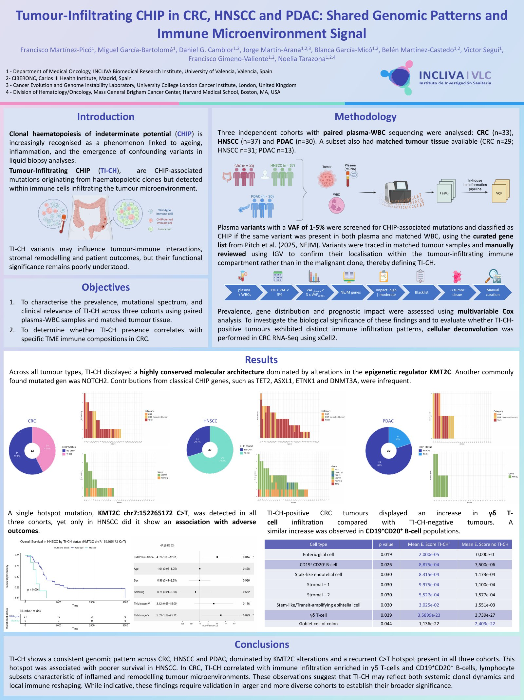

In a nutshell
Tumour-infiltrating clonal haematopoiesis (TI-CH) consists of CHIP-associated mutations detected in immune cells infiltrating the tumour. We characterised TI-CH across three cohorts (CRC, HNSCC, PDAC) with paired plasma–WBC sequencing and matched tumour tissue, and explored its link with the immune microenvironment.
- Conserved genomic pattern across tumour types, dominated by KMT2C alterations.
- A recurrent KMT2C C>T hotspot found in all three cohorts, associated with poorer survival in HNSCC.
- In CRC, TI-CH correlated with γδ T-cell and CD19⁺CD20⁺ B-cell infiltration.
Poster

Tap the image to open the full-resolution PDF and zoom in.